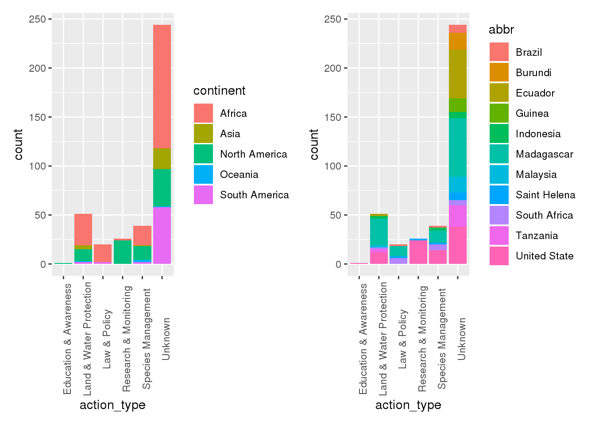

library(ggplot2)
library(dplyr)##
## Attaching package: 'dplyr'## The following objects are masked from 'package:stats':
##
## filter, lag## The following objects are masked from 'package:base':
##
## intersect, setdiff, setequal, unionlibrary(stringr)
library(tidyverse)## ── Attaching packages ─────────────────────────────────────── tidyverse 1.3.0 ──## ✓ tibble 2.1.3 ✓ purrr 0.3.3
## ✓ tidyr 1.0.0 ✓ forcats 0.4.0
## ✓ readr 1.3.1## ── Conflicts ────────────────────────────────────────── tidyverse_conflicts() ──
## x dplyr::filter() masks stats::filter()
## x dplyr::lag() masks stats::lag()library(here)## here() starts at /home/alcruzan/DASC-bloglibrary(patchwork)ep <- read.csv(here("tidytuesday-master", "data", "2020", "2020-08-18", "plants.csv"))
ap <- read.csv(here("tidytuesday-master", "data", "2020", "2020-08-18", "actions.csv"))country_clean <- ep %>%
filter(!is.na(country)) %>%
mutate(abbr = substr(country, 1,10)) %>%
group_by(country, red_list_category, abbr) %>%
summarize(Count = n()) %>%
filter(Count >= 3)
c1 <- ggplot(country_clean, aes(x= abbr, y=Count, color = red_list_category)) +
geom_point() +
theme(axis.text.x = element_text(angle = 90))
c2 <- ggplot(ep, aes(x=continent, fill = group)) +
geom_bar()
c2 /
c1Question 1: Where are a majority of the plant extinctions?
The plant extinctions are mostly in the continent of Africa. This is about half due to Madagascar having around 100 extinctions and also due to Tanzania having about 25 extinctions themselves. In general, most plant extinctions have been flowering plants. In Africa, there is also a decent portion of Cycad plants that have gone extinct. In the Americas, it is mostly flowering plants that have gone extinct. The high count in the Americas is mostly due to two countries: The United States and the Ecuador which each account for 50 extinctions in their continent. Europe has very few extinctions, but a sizable percent of their extinctions is mosses.
threat <- ep %>%
group_by(year_last_seen) %>%
mutate(threat_level = (threat_AA + threat_BRU + threat_RCD + threat_ISGD + threat_EPM + threat_CC + threat_HID + threat_P + threat_TS + threat_NSM + threat_GE + threat_NA)) %>%
mutate(action_level = action_LWP + action_SM + action_LP + action_RM + action_EA + action_NA) %>%
filter(!is.na(year_last_seen)) %>%
ungroup(year_last_seen) %>%
mutate(year_last_seen = factor(year_last_seen, levels=c("Before 1900", "1900-1919", "1920-1939", "1940-1959", "1960-1979", "1980-1999", "2000-2020")))## Warning: Factor `year_last_seen` contains implicit NA, consider using
## `forcats::fct_explicit_na`
## Warning: Factor `year_last_seen` contains implicit NA, consider using
## `forcats::fct_explicit_na`
## Warning: Factor `year_last_seen` contains implicit NA, consider using
## `forcats::fct_explicit_na`line_graph <- threat %>%
group_by(year_last_seen) %>%
summarize(Count = n())
ggplot(data = threat, aes(x = year_last_seen, y = threat_level)) +
geom_point(position = "jitter", alpha = 0.6, aes(size = action_level, color = red_list_category)) +
theme(axis.text.x = element_text(angle = 90)) +
scale_y_continuous(name = "Threat Level", sec.axis = sec_axis(trans=~.*20, name = "Number of Extinctions")) +
geom_boxplot(data = line_graph, aes(x = year_last_seen, y = Count/15))
Question 2: Is there a trend in the time period of extinctions?
From 1900-1959, there were around 100 extinctions every 20 years. From 1960-1979, there was a downward trend in extinctions that continued into 1980-1999. This shows that
actions <- ap %>%
left_join(ep) %>%
filter(action_taken == 1) %>%
group_by(country) %>%
mutate(con_count = n()) %>%
filter(con_count >= 12)## Joining, by = c("binomial_name", "country", "continent", "group", "year_last_seen", "red_list_category")a1 <- ggplot(actions, aes(x= action_type, fill = country))+
geom_bar() +
theme(axis.text.x = element_text(angle = 90))
a2 <- ggplot(actions, aes(x= action_type, fill = continent))+
geom_bar() +
theme(axis.text.x = element_text(angle = 90))
a2 + a1